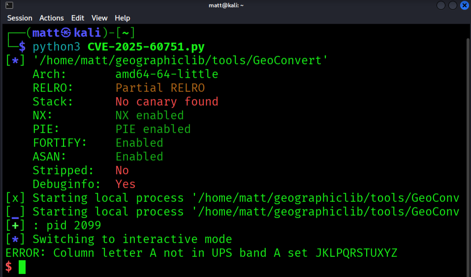

Technical Analysis
The vulnerability stems from improper bounds checking in GeographicLib when processing specific inputs. This can lead to a stack buffer overflow, potentially allowing code execution or crash of the application.
An attacker could also exploit this vulnerability to hijack the program's control flow by overwriting a return address to point to a libc function (ret2libc) and execute arbitrary code using a ROP chain.
Tested on Kali Linux 6.12.25-amd64
Geographiclib version: r2.5.1
Detailed analysis, PoC, and mitigations are covered here.
GeographicLib is a C++ library used for many tasks, including:
- geodesic and rhumb line calculations;
- computations on a triaxial ellipsoid.
- gravity (e.g., EGM2008) and geomagnetic field (e.g., WMM2020) calculations.
- conversions between geographic, UTM, UPS, MGRS, geocentric, and local cartesian coordinates (GeoConvert);
And it is precisely this last component that the vulnerability focuses on.
I used the AFL++ fuzzer to generate crafted payloads to study GeoConvert's behavior when it receives particular inputs.
After hours of fuzzing, there they were, inputs that generated SEGFAULT and crashed the program.
In a program written in C/C++, memory management can be critical, and it is not unusual to find memory corruption vulnerabilities.
An input that crashes the program with a Segmentation Fault can be very interesting to analyze and worth investigating to see what is happening.
After reproducing the crash, I decided to analyze it with the GDB gnu debugger.
┌──(matt㉿kali)-[~]
└─$ gdb --args /home/matt/geographiclib/tools/GeoConvert < /home/matt/geographiclib/tools/out/default/crashes/id:000000,sig:11,src:000640,time:72154,execs:269187,op:havoc,rep:2
...
[ Legend: Modified register | Code | Heap | Stack | String ]
──────────────────────────────────────────────────────────────────────────────────────────────────────────────────────── registers ────
$rax : 0x1
$rbx : 0x1
$rcx : 0x00005555555b1d10 → 0x00005555555a99d2 → 0x0073656572676564 ("degrees"?)
$rdx : 0x1
$rsp : 0x00007fffffffce08 → 0x0000555555585ec8 → , std::allocator > const&, GeographicLib::DMS::flag&)+1e68> mov r14, rax
$rbp : 0x3
$rsi : 0xe
$rdi : 0x1
$rip : 0x00007ffff7b71119 → vpcmpeqb ymm1, ymm0, YMMWORD PTR [rdi]
$r8 : 0x00007ffff7bf1ac0 → 0x0000000000000000
$r9 : 0x1
$r10 : 0x6
$r11 : 0x0
$r12 : 0xa
$r13 : 0x11
$r14 : 0x00005555555b2508 → 0x00005555555b7800 → <__afl_area_initial+0000> add BYTE PTR [rax], al
$r15 : 0x00007fffffffceb0 → 0xffffffffffffffff
$eflags: [zero CARRY PARITY adjust SIGN trap INTERRUPT direction overflow RESUME virtualx86 identification]
$cs: 0x33 $ss: 0x2b $ds: 0x00 $es: 0x00 $fs: 0x00 $gs: 0x00
──────────────────────────────────────────────────────────────────────────────────────────────────────────────────────────── stack ────
0x00007fffffffce08│+0x0000: 0x0000555555585ec8 → , std::allocator > const&, GeographicLib::DMS::flag&)+1e68> mov r14, rax ← $rsp
0x00007fffffffce10│+0x0008: 0x00007fffffffce54 → 0xffffd19800000000
0x00007fffffffce18│+0x0010: 0x00007ffff7c091e8 → 0x0000000000000000
0x00007fffffffce20│+0x0018: 0x00007ffff7fc0788 → 0x00007ffff7ffe310 → 0x0000555555554000 → jg 0x555555554047
0x00007fffffffce28│+0x0020: 0x0000000000000006
0x00007fffffffce30│+0x0028: 0x0000000000000000
0x00007fffffffce38│+0x0030: 0x00007fffffffce48 → 0x00005555557cb300 → 0x00005555555b1c30 → 0x00007ffff7e56be8 → 0x00007ffff7cb4230 → <__cxxabiv1::__si_class_type_info::~__si_class_type_info()+0000> endbr64
0x00007fffffffce40│+0x0038: 0x0000000000000000
────────────────────────────────────────────────────────────────────────────────────────────────────────────────────── code:x86:64 ────
0x7ffff7b71109 and eax, 0xfff
0x7ffff7b7110e cmp eax, 0xfe0
0x7ffff7b71113 ja 0x7ffff7b71250
→ 0x7ffff7b71119 vpcmpeqb ymm1, ymm0, YMMWORD PTR [rdi]
0x7ffff7b7111d vpmovmskb eax, ymm1
0x7ffff7b71121 test eax, eax
0x7ffff7b71123 je 0x7ffff7b71180
0x7ffff7b71125 tzcnt eax, eax
0x7ffff7b71129 vzeroupper
────────────────────────────────────────────────────────────────────────────────────────────────────────────────────────── threads ────
[#0] Id 1, Name: "GeoConvert", stopped 0x7ffff7b71119 in ?? (), reason: SIGSEGV
──────────────────────────────────────────────────────────────────────────────────────────────────────────────────────────── trace ────
[#0] 0x7ffff7b71119 → vpcmpeqb ymm1, ymm0, YMMWORD PTR [rdi]
[#1] 0x555555585ec8 → std::char_traits::length(__s=0x1 )
[#2] 0x555555585ec8 → std::__cxx11::basic_string, std::allocator >::basic_string(this=0x7fffffffcea0, __s=0x1 , __a=)
[#3] 0x555555585ec8 → GeographicLib::DMS::InternalDecode(dmsa="77777'777:::::::::", ind=@0x7fffffffd1e4)
[#4] 0x5555555827de → GeographicLib::DMS::Decode(dms=, ind=@0x7fffffffd27c)
[#5] 0x55555558e47e → GeographicLib::DMS::DecodeLatLon(stra=, strb="\036.", lat=@0x7fffffffd698, lon=@0x7fffffffd6a0, longfirst=0xc0)
[#6] 0x555555560803 → GeographicLib::GeoCoords::Reset(this=0x7fffffffd698, s=, centerp=0x1, longfirst=0x0)
[#7] 0x55555555c43d → main(argc=, argv=)
gef➤ bt
#0 0x00007ffff7b71119 in ?? () from /lib/x86_64-linux-gnu/libc.so.6
#1 0x0000555555585ec8 in std::char_traits::length (__s=0x1 )
at /usr/lib/gcc/x86_64-linux-gnu/14/../../../../include/c++/14/bits/char_traits.h:391
#2 std::__cxx11::basic_string, std::allocator >::basic_string (this=0x7fffffffcea0,
__s=0x1 , __a=...)
at /usr/lib/gcc/x86_64-linux-gnu/14/../../../../include/c++/14/bits/basic_string.h:653
#3 GeographicLib::DMS::InternalDecode (dmsa="77777'777:::::::::", ind=@0x7fffffffd1e4: GeographicLib::DMS::NONE) at DMS.cpp:281
#4 0x00005555555827de in GeographicLib::DMS::Decode (dms=..., ind=@0x7fffffffd27c: GeographicLib::DMS::NONE) at DMS.cpp:178
#5 0x000055555558e47e in GeographicLib::DMS::DecodeLatLon (stra=,
strb="\036.", lat=@0x7fffffffd698: nan(0x8000000000000), lon=@0x7fffffffd6a0: nan(0x8000000000000), longfirst=0xc0) at DMS.cpp:368
#6 0x0000555555560803 in GeographicLib::GeoCoords::Reset (this=0x7fffffffd698, s=..., centerp=0x1, longfirst=0x0) at GeoCoords.cpp:35
#7 0x000055555555c43d in main (argc=, argv=) at GeoConvert.cpp:188
gef➤
=================================================================
==397936==ERROR: AddressSanitizer: stack-buffer-overflow on address 0x7fd8710025f8 at pc 0x55fd04b95f7e bp 0x7ffff9a7f7d0 sp 0x7ffff9a7f7c8
WRITE of size 8 at 0x7fd8710025f8 thread T0
#0 0x55fd04b95f7d in GeographicLib::DMS::InternalDecode(std::__cxx11::basic_string, std::allocator> const&, GeographicLib::DMS::flag&) /home/matt/geographiclib/src/DMS.cpp:291:22
#1 0x55fd04b8c597 in GeographicLib::DMS::Decode(std::__cxx11::basic_string, std::allocator> const&, GeographicLib::DMS::flag&) /home/matt/geographiclib/src/DMS.cpp:178:12
#2 0x55fd04b96ed7 in GeographicLib::DMS::DecodeLatLon(std::__cxx11::basic_string, std::allocator> const&, std::__cxx11::basic_string, std::allocator> const&, double&, double&, bool) /home/matt/geographiclib/src/DMS.cpp:368:9
#3 0x55fd04b6da24 in GeographicLib::GeoCoords::Reset(std::__cxx11::basic_string, std::allocator> const&, bool, bool) /home/matt/geographiclib/src/GeoCoords.cpp:35:7
#4 0x55fd04b697c9 in main /home/matt/geographiclib/tools/GeoConvert.cpp:188:11
#5 0x7fd8727f4ca7 in __libc_start_call_main csu/../sysdeps/nptl/libc_start_call_main.h:58:16
#6 0x7fd8727f4d64 in __libc_start_main csu/../csu/libc-start.c:360:3
#7 0x55fd04a83a00 in _start (/home/matt/geographiclib/tools/GeoConvert+0x36a00) (BuildId: 79250b7b698dfd6b71946007b7b4be0f1ef38cf2)
Address 0x7fd8710025f8 is located in stack of thread T0 at offset 1528 in frame
#0 0x55fd04b8d75f in GeographicLib::DMS::InternalDecode(std::__cxx11::basic_string, std::allocator> const&, GeographicLib::DMS::flag&) /home/matt/geographiclib/src/DMS.cpp:192
This frame has 84 object(s):
[32, 40) '__dnew.i.i.i2529'
[64, 72) '__dnew.i.i.i2417'
[96, 104) '__dnew.i.i.i2263'
[128, 136) '__dnew.i.i.i2151'
[160, 168) '__dnew.i.i.i2117'
[192, 200) '__dnew.i.i.i1966'
[224, 232) '__dnew.i.i1918'
[256, 264) '__dnew.i.i.i1743'
[288, 296) '__dnew.i.i1660'
[320, 328) '__dnew.i.i1625'
[352, 360) '__dnew.i.i.i1474'
[384, 392) '__dnew.i.i'
[416, 424) '__dnew.i.i.i1354'
[448, 456) '__dnew.i.i.i1274'
[480, 488) '__dnew.i.i.i1042'
[512, 520) '__dnew.i.i.i'
[544, 576) 'errormsg' (line 193)
[608, 640) 'ref.tmp' (line 210)
[672, 704) 'ref.tmp31' (line 210)
[736, 768) 'ref.tmp32' (line 210)
[800, 832) 'ref.tmp33' (line 210)
[864, 896) 'ref.tmp43' (line 210)
[928, 960) 'ref.tmp60' (line 214)
[992, 1024) 'ref.tmp61' (line 214)
[1056, 1088) 'ref.tmp62' (line 214)
[1120, 1152) 'ref.tmp63' (line 214)
[1184, 1216) 'ref.tmp64' (line 214)
[1248, 1280) 'ref.tmp65' (line 214)
[1312, 1344) 'ref.tmp75' (line 214)
[1376, 1408) 'ref.tmp85' (line 214)
[1440, 1472) 'ref.tmp138' (line 232)
[1504, 1528) 'ipieces' (line 235) <== Memory access at offset 1528 overflows this variable
[1568, 1592) 'fpieces' (line 236)
[1632, 1640) 'fcurrent' (line 239)
[1664, 1696) 'ref.tmp167' (line 255)
[1728, 1760) 'ref.tmp168' (line 255)
[1792, 1824) 'ref.tmp190' (line 264)
[1856, 1888) 'ref.tmp191' (line 264)
[1920, 1952) 'ref.tmp208' (line 271)
[1984, 2016) 'ref.tmp209' (line 271)
[2048, 2080) 'ref.tmp210' (line 271)
[2112, 2144) 'ref.tmp211' (line 271)
[2176, 2208) 'ref.tmp219' (line 271)
[2240, 2272) 'ref.tmp242' (line 275)
[2304, 2336) 'ref.tmp243' (line 275)
[2368, 2400) 'ref.tmp244' (line 275)
[2432, 2464) 'ref.tmp245' (line 275)
[2496, 2528) 'ref.tmp246' (line 275)
[2560, 2592) 'ref.tmp254' (line 275)
[2624, 2656) 'ref.tmp265' (line 275)
[2688, 2720) 'ref.tmp295' (line 281)
[2752, 2784) 'ref.tmp296' (line 281)
[2816, 2848) 'ref.tmp297' (line 281)
[2880, 2912) 'ref.tmp298' (line 281)
[2944, 2976) 'ref.tmp308' (line 281)
[3008, 3392) 's' (line 286)
[3456, 3488) 'ref.tmp331' (line 286)
[3520, 3552) 'ref.tmp364' (line 299)
[3584, 3616) 'ref.tmp365' (line 299)
[3648, 3680) 'ref.tmp378' (line 303)
[3712, 3744) 'ref.tmp379' (line 303)
[3776, 3808) 'ref.tmp380' (line 303)
[3840, 3872) 'ref.tmp381' (line 303)
[3904, 3936) 'ref.tmp388' (line 303)
[3968, 4000) 'ref.tmp423' (line 312)
[4032, 4064) 'ref.tmp424' (line 312)
[4096, 4128) 'ref.tmp439' (line 317)
[4160, 4192) 'ref.tmp440' (line 317)
[4224, 4608) 's455' (line 322)
[4672, 4704) 'ref.tmp456' (line 322)
[4736, 4768) 'ref.tmp484' (line 331)
[4800, 4832) 'ref.tmp485' (line 331)
[4864, 4896) 'ref.tmp503' (line 337)
[4928, 4960) 'ref.tmp504' (line 337)
[4992, 5024) 'ref.tmp505' (line 337)
[5056, 5088) 'ref.tmp506' (line 337)
[5120, 5152) 'ref.tmp507' (line 337)
[5184, 5216) 'ref.tmp515' (line 337)
[5248, 5280) 'ref.tmp539' (line 342)
[5312, 5344) 'ref.tmp540' (line 342)
[5376, 5408) 'ref.tmp541' (line 342)
[5440, 5472) 'ref.tmp542' (line 342)
[5504, 5536) 'ref.tmp543' (line 342)
[5568, 5600) 'ref.tmp551' (line 342)
HINT: this may be a false positive if your program uses some custom stack unwind mechanism, swapcontext or vfork
(longjmp and C++ exceptions *are* supported)
SUMMARY: AddressSanitizer: stack-buffer-overflow /home/matt/geographiclib/src/DMS.cpp:291:22 in GeographicLib::DMS::InternalDecode(std::__cxx11::basic_string, std::allocator> const&, GeographicLib::DMS::flag&)
Shadow bytes around the buggy address:
0x7fd871002300: f2 f2 f2 f2 f8 f8 f8 f8 f2 f2 f2 f2 f8 f8 f8 f8
0x7fd871002380: f2 f2 f2 f2 f8 f8 f8 f8 f2 f2 f2 f2 f8 f8 f8 f8
0x7fd871002400: f2 f2 f2 f2 f8 f8 f8 f8 f2 f2 f2 f2 f8 f8 f8 f8
0x7fd871002480: f2 f2 f2 f2 f8 f8 f8 f8 f2 f2 f2 f2 f8 f8 f8 f8
0x7fd871002500: f2 f2 f2 f2 f8 f8 f8 f8 f2 f2 f2 f2 f8 f8 f8 f8
=>0x7fd871002580: f2 f2 f2 f2 f8 f8 f8 f8 f2 f2 f2 f2 00 00 00[f2]
0x7fd871002600: f2 f2 f2 f2 00 00 00 f2 f2 f2 f2 f2 00 f2 f2 f2
0x7fd871002680: f8 f8 f8 f8 f2 f2 f2 f2 f8 f8 f8 f8 f2 f2 f2 f2
0x7fd871002700: f8 f8 f8 f8 f2 f2 f2 f2 f8 f8 f8 f8 f2 f2 f2 f2
0x7fd871002780: f8 f8 f8 f8 f2 f2 f2 f2 f8 f8 f8 f8 f2 f2 f2 f2
0x7fd871002800: f8 f8 f8 f8 f2 f2 f2 f2 f8 f8 f8 f8 f2 f2 f2 f2
Shadow byte legend (one shadow byte represents 8 application bytes):
Addressable: 00
Partially addressable: 01 02 03 04 05 06 07
Heap left redzone: fa
Freed heap region: fd
Stack left redzone: f1
Stack mid redzone: f2
Stack right redzone: f3
Stack after return: f5
Stack use after scope: f8
Global redzone: f9
Global init order: f6
Poisoned by user: f7
Container overflow: fc
Array cookie: ac
Intra object redzone: bb
ASan internal: fe
Left alloca redzone: ca
Right alloca redzone: cb
==397936==ABORTING
